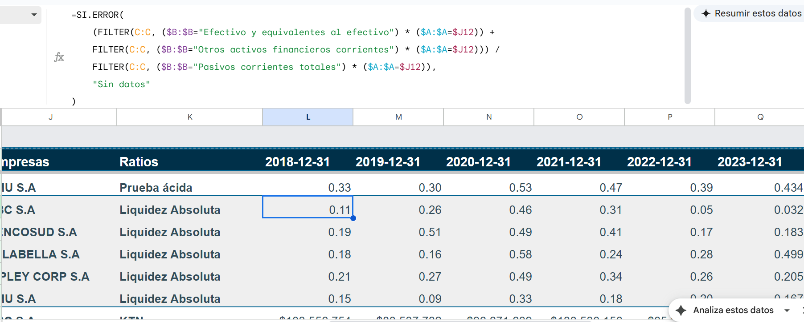

Diseñé un ecosistema de datos automatizado. Utilizando Python, creé un motor de extracción y limpieza que procesa balances y estados de resultados históricos. Los datos refinados alimentan un modelo en Google Sheets, donde implementé un dashboard dinámico con selectores y filtros avanzados.
¿Te interesa una solución así?
Hablemos del proyectoSe utilizo Python para ingerir y parsear tablas financieras directamente desde archivos web, transformando estructuras HTML crudas en DataFrames manipulables.
Aplicación de técnicas de manipulación de cadenas y conversión de tipos de datos para el saneamiento de formatos numéricos (moneda) y la estandarización de cuentas contables, asegurando la integridad y calidad (Data Quality) de la información.
Fusión vertical y horizontal de periodos históricos y múltiples entidades en un único repositorio tabular (CSV), manejando la variabilidad de cuentas entre años.
Diseño de interfaz en Google Sheets con tablas dinámicas y segmentadores (Slicers). Cálculo automatizado de KPIs financieros para la toma de decisiones basada en datos.
import pandas as pd
from pathlib import Path
import re
# --- CONFIGURACIÓN Y CONSTANTES ---
# Definimos las cuentas a extraer como constantes globales para mantener el código limpio
CUENTAS_EEFF = [
"Efectivo y equivalentes al efectivo", "Otros activos financieros corrientes",
"Deudores comerciales y otras cuentas por cobrar corrientes", "Inventarios corrientes",
"Activos biológicos corrientes", "Activos por impuestos corrientes, corrientes",
"Cuentas por cobrar a entidades relacionadas, corrientes", "Activos corrientes totales",
"Propiedades, planta y equipo", "Activos intangibles distintos de la plusvalía",
"Plusvalía", "Inversiones contabilizadas utilizando el método de la participación",
"Activos biológicos no corrientes", "Propiedad de inversión",
"Activos por impuestos diferidos", "Otros activos financieros no corrientes",
"Cuentas por cobrar no corrientes", "Cuentas por cobrar a entidades relacionadas, no corrientes",
"Total de activos no corrientes", "Total de activos", "Otros pasivos financieros corrientes",
"Pasivos por arrendamientos corrientes", "Cuentas por pagar comerciales y otras cuentas por pagar",
"Otras provisiones a corto plazo", "Pasivos por impuestos corrientes, corrientes",
"Provisiones corrientes por beneficios a los empleados",
"Cuentas por pagar a entidades relacionadas, corrientes", "Pasivos corrientes totales",
"Otros pasivos financieros no corrientes", "Pasivos por arrendamientos no corrientes",
"Otras provisiones a largo plazo", "Pasivo por impuestos diferidos",
"Provisiones no corrientes por beneficios a los empleados", "Cuentas por pagar no corrientes",
"Cuentas por pagar a entidades relacionadas, no corrientes", "Total de pasivos no corrientes",
"Total de pasivos", "Capital emitido y pagado", "Ganancias (pérdidas) acumuladas",
"Otras reservas", "Patrimonio atribuible a los propietarios de la controladora",
"Participaciones no controladoras", "Patrimonio total"
]
CUENTAS_EERR = [
"Ingresos de actividades ordinarias", "Costo de ventas", "Ganancia bruta",
"Costos de distribución", "Gastos de administración", "Otros gastos, por función",
"Otros gastos, por naturaleza", "Gasto por depreciación y amortización",
"Otros ingresos", "Otras ganancias (pérdidas)", "Ingresos financieros",
"Costos financieros", "Ganancias (pérdidas) de cambio en moneda extranjera",
"Resultados por unidades de reajuste", "Ganancia (pérdida), antes de impuestos",
"Gasto por impuestos a las ganancias", "Ganancias (pérdidas) de actividades operacionales",
"Ganancia (pérdida) procedente de operaciones continuadas",
"Ganancia (pérdida) procedente de operaciones discontinuadas", "Ganancia (pérdida)"
]
def clean_currency_series(series):
"""
Limpia una columna de strings con formato moneda y la convierte a enteros.
Elimina todo lo que no sea dígito o signo negativo.
"""
# 1. Eliminar caracteres no numéricos excepto el guion
clean = series.replace(r'[^\d-]', '', regex=True)
# 2. Convertir a numérico (coerce transforma errores en NaN) y llenar NaNs con 0
return pd.to_numeric(clean, errors='coerce').fillna(0).astype(int)
def process_html_file(file_path):
"""Procesa un HTML individual y retorna un DataFrame limpio."""
try:
# Pandas busca todas las tablas en el HTML
tables = pd.read_html(file_path)
# Validamos que existan las tablas necesarias (Índices 1 y 2 usualmente)
if len(tables) < 3:
raise ValueError("El archivo HTML no contiene suficientes tablas.")
df_balance = tables[1]
df_estado_res = tables[2]
except Exception as e:
print(f"Error leyendo tablas en {file_path.name}: {e}")
return None
# Estandarización de nombres de columnas
col_name_0 = df_balance.columns[0]
df_balance = df_balance.rename(columns={col_name_0: 'Cuentas'})
df_estado_res.columns = df_balance.columns # Forzamos que tengan las mismas columnas
# Preparar DataFrames base con las cuentas que nos interesan
ref_eeff = pd.DataFrame({'Cuentas': CUENTAS_EEFF})
ref_eerr = pd.DataFrame({'Cuentas': CUENTAS_EERR})
# Merge (Left Join): Usamos nuestros listados limpios como base y traemos los datos del HTML
eeff_merged = pd.merge(ref_eeff, df_balance, on='Cuentas', how='left').fillna(0)
eerr_merged = pd.merge(ref_eerr, df_estado_res, on='Cuentas', how='left').fillna(0)
# Consolidar ambos reportes
df_final = pd.concat([eeff_merged, eerr_merged], ignore_index=True)
# Limpieza de datos numéricos
cols_datos = df_final.columns.difference(['Cuentas'])
for col in cols_datos:
df_final[col] = clean_currency_series(df_final[col])
# Enriquecimiento de datos (Metadatos)
df_final['Empresas'] = file_path.stem # .stem obtiene el nombre sin extensión
df_final['Sector'] = 'INDUS'
# Reordenamiento inteligente de columnas (Fechas primero, luego metadatos)
# Detectamos columnas de fecha por su formato (YYYY-MM-DD)
date_cols = [c for c in df_final.columns if isinstance(c, str) and re.match(r'\d{4}-\d{2}-\d{2}', c)]
fixed_cols = ['Sector', 'Empresas', 'Cuentas']
# Orden final: Fijas + Fechas ordenadas descendente
final_cols = fixed_cols + sorted(date_cols, reverse=True)
# Filtramos para asegurar que solo pedimos columnas que existen
available_cols = [c for c in final_cols if c in df_final.columns]
return df_final[available_cols]
def batch_process_files(input_dir, output_dir):
"""Recorre una carpeta, procesa los HTML y guarda CSVs."""
input_path = Path(input_dir)
output_path = Path(output_dir)
# Crear carpeta de destino si no existe
output_path.mkdir(parents=True, exist_ok=True)
print(f"Iniciando procesamiento en: {input_path}")
# Glob permite buscar patrones fácilmente (ej: *.html)
files = list(input_path.glob('*.html'))
if not files:
print("No se encontraron archivos HTML en la ruta especificada.")
return
for file_path in files:
try:
df = process_html_file(file_path)
if df is not None:
output_file = output_path / f"{file_path.stem}.csv"
df.to_csv(output_file, index=False)
print(f"✓ Procesado: {file_path.name}")
except Exception as e:
print(f"✗ Error en {file_path.name}: {e}")
# --- EJECUCIÓN ---
if __name__ == "__main__":
# Configuración de rutas
BASE_FOLDER = Path("CMF/ABC SA")
OUTPUT_FOLDER = Path("Resultados") / BASE_FOLDER.name
batch_process_files(BASE_FOLDER, OUTPUT_FOLDER)
Desarrollo de un script en Python (Pandas/Pathlib) para automatizar la extracción de datos contables desde reportes financieros en formato HTML crudo. El proceso incluye la normalización de tablas, limpieza de datos numéricos (regex) y estandarización de cuentas bajo normas IFRS. El resultado es un dataset estructurado correspondiente a un perido de cada empresa.
import pandas as pd
from pathlib import Path
def consolidate_financial_history(folder_path, output_filename):
"""
Lee múltiples CSVs de una empresa, usa las cuentas como índice
y concatena horizontalmente para crear una serie de tiempo.
"""
input_path = Path(folder_path)
# 1. Obtener lista de archivos CSV
files = list(input_path.glob('*.csv'))
if not files:
print(f"Advertencia: No se encontraron archivos en {folder_path}")
return
# Definimos las columnas que usarás como identificadores únicos
# Estas deben coincidir con las que generó tu script anterior
id_cols = ['Cuentas', 'Empresas', 'Sector']
dataframes = []
print(f"Consolidando {len(files)} periodos para: {input_path.name}...")
# 2. Cargar todos los archivos en memoria
for file in files:
try:
# Leemos el CSV
df = pd.read_csv(file)
# Verificamos que tenga las columnas clave
if not all(col in df.columns for col in id_cols):
print(f"Saltando {file.name}: Faltan columnas clave.")
continue
# ESTRATEGIA CLAVE: Usamos las columnas de texto como ÍNDICE.
# Esto permite a Pandas saber cómo alinear las filas automáticamente.
df = df.set_index(id_cols)
dataframes.append(df)
except Exception as e:
print(f"Error leyendo {file.name}: {e}")
if not dataframes:
return
# 3. Concatenación Horizontal (axis=1)
# Pandas alineará automáticamente las cuentas. Si una cuenta aparece en un año
# y no en otro, Pandas pondrá NaN (que luego llenamos con 0).
df_consolidado = pd.concat(dataframes, axis=1, sort=False)
# 4. Limpieza final
# Rellenamos vacíos con 0 (asumiendo que si no está la cuenta, el valor es 0)
df_consolidado = df_consolidado.fillna(0)
# Reseteamos el índice para que 'Cuentas', 'Empresa', etc., vuelvan a ser columnas
df_consolidado = df_consolidado.reset_index()
# 5. Guardar resultado
# Creamos la carpeta de salida si no existe
output_path = Path("Resultados_Consolidados")
output_path.mkdir(exist_ok=True)
full_output_path = output_path / output_filename
df_consolidado.to_csv(full_output_path, index=False)
print(f"✓ Éxito: Archivo consolidado guardado en {full_output_path}")
return df_consolidado
# --- EJECUCIÓN ---
if __name__ == "__main__":
# Ruta donde están tus CSVs individuales del paso anterior
CARPETA_ORIGEN = "Resultados/ABC SA"
# Nombre del archivo final
NOMBRE_ARCHIVO_FINAL = "ABC_SA_Consolidado_Historico.csv"
consolidate_financial_history(CARPETA_ORIGEN, NOMBRE_ARCHIVO_FINAL)
consolidación de datos en Python para construir series de tiempo financieras históricas. Optimizando el rendimiento, sustituí las uniones iterativas tradicionales por una estrategia de alineación de índices y concatenación vectorial con Pandas (pd.concat).
Luego de unir los datos en un solo dataset maestro con los datos todas las empresas consolidadas, con Google Sheets realize los calculos de ratios financieros. formulas como FILTER ayudaron a seleccionar los datos relevantes para cada ratio.
Transformación de un proceso intensivo de extracción manual de reportes en un pipeline automatizado con Python. Se logró reducir el tiempo de procesamiento de días a minutos, eliminando errores de digitación y liberando tiempo para el análisis de valor.
Capacidad para consolidar fuentes de datos dispares y no estructuradas en un repositorio unificado. El modelo de datos resultante maneja la variabilidad histórica de las cuentas contables, creando una base sólida y escalable para cualquier análisis posterior.
Diseño de interfaces de usuario (Dashboards) que permiten la exploración autónoma de los datos. El uso de filtros y gráficos dinámicos transforma tablas estáticas en herramientas visuales que facilitan la detección rápida de patrones y tendencias.
Visualización final del proyecto que integra los datos procesados. Permite realizar un análisis "Cross-Sectional" (comparativo entre empresas) y longitudinal (histórico 2018-2023). Incluye descomposición de ROE (Dupont), estructura de capital y posicionamiento de mercado frente al promedio de la industria, todo controlado mediante segmentadores dinámicos.
El estudio revela que ABC S.A. lidera el grupo con un pico de 2,42 en 2021, normalizándose a 1,60 tras su integración. Falabella S.A. mantiene una liquidez estable sobre 1,30, mientras que Ripley Corp S.A. muestra un descenso hacia niveles de 1,0 por el contexto macroeconómico. En contraste, Cencosud y SMU operan con ratios menores a 1,0, lo que refleja modelos de negocio basados en el crédito de proveedores y capital de trabajo negativo, una dinámica estándar para grandes retailers y supermercados.
El análisis de la prueba ácida entre 2018 y 2023 muestra que ABC S.A. mantiene los ratios más altos (cercanos a 1,0) debido a su cartera de cuentas por cobrar financieras, mientras que Falabella y Ripley presentan niveles intermedios (0,7 a 1,0) influenciados por sus brazos bancarios, destacando el fortalecimiento de caja en Falabella y la reciente compresión en Ripley. En contraste, Cencosud refleja una mayor dependencia de la rotación de inventarios con una tendencia decreciente hacia 0,45, y SMU registra los niveles más bajos (0,18 a 0,26), un comportamiento estructural en el retail de alimentos donde la alta rotación y el flujo de caja diario permiten operar con menor liquidez inmediata.
Fuente de Datos: La información financiera base fue extraída del portal público de la CMF Chile. La metodología de cálculo de ratios, el procesamiento de datos y el análisis visual son de elaboración propia.